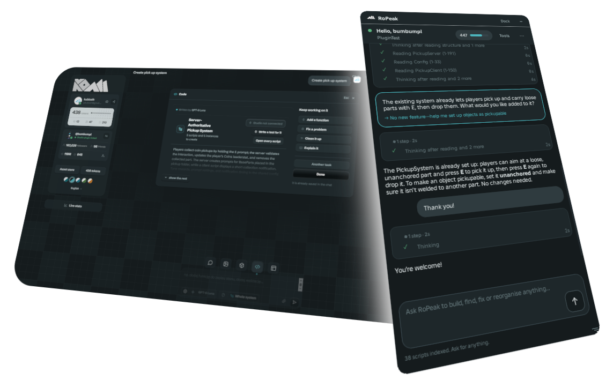

New chat
Chat
What are we working on?
Describe what you want to make. The right tool is picked for you, or choose one in the dock below.

Picture
required
Click to choose one, or drop it here
Upload
Ready
Look to copy
required
Its style goes onto your picture
Upload
Ready
GPT-5.6 Luna
GPT-5.6 Luna